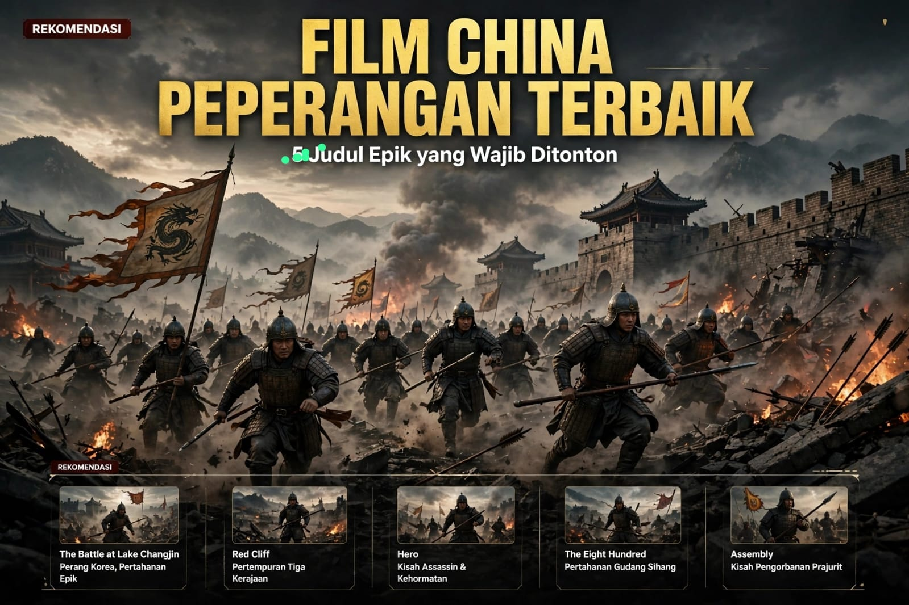

8 Film Perang China Terbaik Sepanjang Masa: Sinopsis, Pemain, Tanggal Rilis & Penghargaan
Dipublikasikan dan diperbarui: 7 November 2026

Film perang China menawarkan kisah yang sangat beragam: mulai dari strategi militer pada era Tiga Kerajaan, konflik pada masa Dinasti Qing, invasi Jepang, hingga Perang Korea. Sebagian film mengadaptasi peristiwa sejarah, sementara sebagian lainnya menggabungkan fakta, legenda, dan dramatisasi untuk membangun cerita sinematik.
Daftar berikut bukan peringkat mutlak. Pilihan disusun berdasarkan pengaruh, skala produksi, kualitas penceritaan, popularitas, serta rekam penghargaan. Tanggal rilis yang dicantumkan merujuk pada pemutaran perdana di China daratan.
Daftar Film Perang China Terbaik
1. Red Cliff (2008)
Tanggal rilis di China: 10 Juli 2008 | Sutradara: John Woo
Pemain utama: Tony Leung Chiu-wai, Takeshi Kaneshiro, Zhang Fengyi, Chang Chen, Zhao Wei, Hu Jun
Sinopsis: Berlatar akhir Dinasti Han, perdana menteri Cao Cao mengerahkan pasukan besar untuk menaklukkan wilayah selatan. Untuk menghadapi kekuatan yang jauh lebih besar, kubu Sun Quan dan Liu Bei membentuk aliansi. Zhuge Liang dan Zhou Yu menyusun strategi yang memanfaatkan medan, cuaca, dan kelemahan armada lawan. Film ini menampilkan perjalanan menuju Pertempuran Tebing Merah, salah satu pertempuran paling terkenal dalam sejarah Tiongkok.
Penghargaan dan pencapaian: Menerima berbagai nominasi internasional, termasuk nominasi Golden Horse dan Saturn Awards. Pengakuan yang sering dicatat mencakup aspek musik, kostum, dan film berbahasa asing; daftar nominasi berbeda menurut versi rilis.
2. The Warlords (2007)
Tanggal rilis di China: 12 Desember 2007 | Sutradara: Peter Chan
Pemain utama: Jet Li, Andy Lau, Takeshi Kaneshiro, Xu Jinglei
Sinopsis: Berlatar Pemberontakan Taiping pada abad ke-19, film ini mengikuti tiga pria yang mengikat sumpah persaudaraan setelah bertemu di tengah kekacauan. Mereka membangun kekuatan militer dan memenangkan sejumlah pertempuran, tetapi ambisi politik, kesetiaan, cinta, dan pengkhianatan perlahan menguji ikatan mereka. Ceritanya menyoroti sisi manusiawi dan moral dari perang, bukan hanya kemenangan di medan tempur.
Penghargaan dan pencapaian: Meraih Hong Kong Film Award 2008 untuk Best Film dan Best Actor (Jet Li), serta Golden Horse Award 2008 untuk Best Feature Film dan Best Director.
3. Assembly (2007)
Tanggal rilis di China: 20 Desember 2007 | Sutradara: Feng Xiaogang
Pemain utama: Zhang Hanyu, Deng Chao, Yuan Wenkang, Tang Yan, Wang Baoqiang, Liao Fan, Hu Jun
Sinopsis: Kapten Gu Zidi memimpin sebuah kompi dalam perang saudara China. Setelah menerima perintah untuk bertahan sampai suara terompet tertentu terdengar, pasukannya mengalami kehancuran dan Gu menjadi satu-satunya orang yang terus memperjuangkan pengakuan atas nasib rekan-rekannya. Bertahun-tahun kemudian, ia mencari kebenaran dan penghormatan bagi para prajurit yang gugur. Film ini memadukan adegan pertempuran intens dengan drama tentang ingatan dan pengorbanan.
Penghargaan dan pencapaian: Zhang Hanyu memenangkan Golden Horse Award 2008 untuk Best Leading Actor; film ini juga memenangkan Golden Rooster Award 2009 untuk Best Film dan penghargaan Golden Horse untuk Best Adapted Screenplay.
4. City of Life and Death (Nanjing! Nanjing!) (2009)
Tanggal rilis di China: 22 April 2009 | Sutradara: Lu Chuan
Pemain utama: Liu Ye, Gao Yuanyuan, Fan Wei, Hideo Nakaizumi, Qin Lan, Jiang Yiyan
Sinopsis: Berlatar Nanjing pada Desember 1937, film ini menggambarkan jatuhnya kota dalam Perang Tiongkok-Jepang Kedua melalui pengalaman tentara, warga sipil, dan orang-orang yang berada di zona aman internasional. Cerita memperlihatkan kehancuran kota, upaya bertahan hidup, serta tragedi kemanusiaan yang menyertai pendudukan. Film ini dibuat dengan nada serius dan tidak ringan untuk ditonton.
Penghargaan dan pencapaian: Lu Chuan memenangkan penghargaan Achievement in Directing dan film ini meraih penghargaan Achievement in Cinematography di Asia Pacific Screen Awards 2009. Film ini juga memenangkan Golden Seashell di San Sebastián International Film Festival 2009.
5. The Eight Hundred (2020)
Tanggal rilis di China: 21 Agustus 2020 | Sutradara: Guan Hu
Pemain utama: Huang Zhizhong, Oho Ou, Wang Qianyuan, Jiang Wu, Zhang Yi, Du Chun, Vision Wei, Li Chen
Sinopsis: Pada 1937, sekelompok tentara Tiongkok bertahan di Gudang Sihang, Shanghai, saat pasukan Jepang mengepung kawasan tersebut. Dari bangunan yang terisolasi, para prajurit berusaha menahan serangan sambil mempertahankan semangat mereka di hadapan musuh dan warga yang menyaksikan dari seberang sungai. Film ini menonjolkan skala pertempuran, keberanian, dan harga yang harus dibayar dalam mempertahankan posisi.
Penghargaan dan pencapaian: Memenangkan Golden Reel Award 2021 untuk sound editing film berbahasa asing dan Asian Film Award 2021 untuk Best Visual Effects. Guan Hu juga meraih Best Director di Macau International Movie Festival 2020.
6. The Sacrifice (2020)
Tanggal rilis di China: 23 Oktober 2020 | Sutradara: Guan Hu, Frant Gwo, Lu Yang
Pemain utama: Zhang Yi, Wu Jing, Li Jiuxiao, Vision Wei, Deng Chao
Sinopsis: Berlatar Perang Korea pada 1953, film ini mengikuti upaya pasukan Tiongkok mempertahankan jalur penyeberangan di Sungai Kumgang di tengah serangan udara dan artileri. Cerita disampaikan dari beberapa sudut pandang, memperlihatkan bagaimana tentara, teknisi, dan komandan menghadapi tugas yang sama dengan risiko besar. Struktur penceritaan berulang membuat penonton melihat satu rangkaian peristiwa dari perspektif berbeda.
Penghargaan dan pencapaian: Meraih sejumlah penghargaan dan nominasi festival, termasuk Golden Lotus Award 2020 untuk Best Actor (Zhang Yi) dan Best Writing (Guan Hu) di Macau International Movie Festival.
7. The Battle at Lake Changjin (2021)
Tanggal rilis di China: 30 September 2021 | Sutradara: Chen Kaige, Tsui Hark, Dante Lam
Pemain utama: Wu Jing, Jackson Yee, Duan Yihong, Zhu Yawen, Li Chen, Hu Jun
Sinopsis: Berlatar Pertempuran Waduk Chosin pada Perang Korea tahun 1950, film ini mengikuti dua bersaudara, Wu Qianli dan Wu Wanli, yang bergabung dengan pasukan di tengah cuaca musim dingin ekstrem. Mereka menghadapi pertempuran besar, kekurangan perlengkapan, dan keputusan sulit saat pasukan bergerak di wilayah bersalju. Film ini dikenal karena skala produksinya yang sangat besar dan adegan pertempuran berskala epik.
Penghargaan dan pencapaian: Memenangkan Outstanding Film dan Outstanding Director di Huabiao Film Awards 2022. Film ini juga memenangkan Best Film di Changchun Film Festival 2021 dan sejumlah penghargaan industri lainnya.
8. The Battle at Lake Changjin II: Water Gate Bridge (2022)
Tanggal rilis di China: 1 Februari 2022 | Sutradara: Tsui Hark, Chen Kaige, Dante Lam
Pemain utama: Wu Jing, Jackson Yee, Duan Yihong, Zhu Yawen, Li Chen, Hu Jun
Sinopsis: Sekuel ini melanjutkan kisah pasukan setelah pertempuran di kawasan Danau Changjin. Kompi ketujuh menerima misi menyerang dan menghancurkan Jembatan Shuimen, jalur penting bagi pergerakan pasukan lawan. Dalam cuaca ekstrem dan kondisi fisik yang semakin melemah, para prajurit harus menyelesaikan misi melalui beberapa serangan berbahaya.
Penghargaan dan pencapaian: Mendapat perhatian besar secara komersial dan menjadi bagian dari seri film perang Tiongkok yang sangat populer. Untuk menghindari klaim berlebihan, artikel ini tidak mencantumkan kemenangan penghargaan utama yang belum terverifikasi secara kuat.
Kesimpulan
Film perang China terbaik tidak selalu menawarkan tontonan yang sama. Red Cliff cocok bagi penonton yang menyukai strategi perang kerajaan; Assembly dan The Warlords menonjolkan sisi manusiawi konflik; sedangkan City of Life and Death menghadirkan drama sejarah yang berat. Untuk skala pertempuran modern, The Eight Hundred dan The Battle at Lake Changjin menjadi pilihan yang menarik. Pilih film sesuai minat dan ingat bahwa film sejarah tetap dapat mengandung dramatisasi.